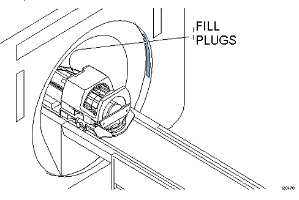

Operating Documentation
Direction 5440001-3, Rev# 6
Signa HDxt Service Methods
Module Version 1.0, Version Date 5/3/07
Operating Documentation |
| Required Persons | Preliminary Reqs | Procedure | Finalization |
|---|---|---|---|
| 1 | 0 min | 45 mins | 0 min |
Reversal of the polarity of a single gradient causes the right/left or top/bottom reversal of the images from two axes, and reversal of the offsets for one axis. Incorrect polarity of all of the gradients causes the images from all planes to be upside down and backward, and causes the system to scan offset images in the opposite direction from those commanded for all axes.
| NOTE: | The values mentioned in this procedure are related to the physical x, y, and z gradient amplifiers, respectively. The values for setting x-, y-, and z-gradient to obtain 1 gauss/cm, respectfully, are in the system configuration file. |
| Last Update | 02/03/2006 |
| ||||
| POISON HAZARD! | ||||
| 1.5T and 1.0T Phantoms CONTAINS NICKEL, A SUSPECT CARCINOGEN. | ||||
| DO NOT INGEST. DISPOSE OF AS A HAZARDOUS WASTE ACCORDING TO STATE AND FEDERAL REGULATIONS. |
| ||||
| POISON HAZARD! | ||||
| 3.0T Phantoms CONTAINS Silicon oil. | ||||
| DO NOT INGEST. DISPOSE OF AS A HAZARDOUS WASTE ACCORDING TO STATE AND FEDERAL REGULATIONS. |
At the operator workspace, select the [SCAN] icon
Click on [New Pt] to enable setting of a new landmark.
the following:
Id: geservice<Enter>
Name: gradient polarity<Enter>
Weight (Lb.): 111<Enter>
Place the DQA-III phantom and loader in the head coil. Position it with the fill plugs up, and toward rear of magnet (see Illustration 1).
Illustration 1: DQA PHANTOM POSITIONING

Landmark in the sagittal and axial planes (DQA-III coronal plane is not at isocenter). See Illustration 2for positioning the phantom in the quad head coil.
Illustration 2: LANDMARKING DQA-III PHANTOM

At front enclosure on scanner, press <LANDMARK>, then <MOVE TO SCAN>.
At the Operator Workspace, prepare the system for a “Geometry Verification, Coronal” scan using the scan protocol found in
Table 1: Coronal Scan Protocol
| SCAN OPTION | INPUT | ||
| Patient Register | [New Pt] | ||
| PATIENT INFORMATION | |||
| Patient ID | geservice | ||
| Patient Name | gradient polarity | ||
| Weight (LB) | 111 | ||
| [Landmark] | |||
| Landmark | [>]Nasion | ||
| PATIENT PROTOCOLS | |||
| Patient Position | [>]Supine | ||
| Patient Entry | [>]Head First | ||
| Coil | [>]Head[Accept] | ||
| IMAGING PARAMETERS | |||
| Plane | [>]Coronal | ||
| Mode | [>]2D | ||
| Pulse Seq | [>]Spin Echo[Accept] | ||
| Imaging Options | none (Default) | ||
| PSD Name | none | ||
| Protocol | no entry | ||
| SCAN TIMING | |||
| # of Echoes | 1<Default> | ||
| TE | 20 | ||
| TR | 300 | ||
| Bandwidth | 15.63 | ||
| SCANNING RANGE | |||
| FOV | 24 | ||
| Sice Thickness | 10 | ||
| Spacing | 1.5 | ||
| A/P Start | 0 | ||
| A/P End | 0 | ||
| # of Slices | 1<Default> | ||
| S/I | 0<Default> | ||
| R/L | 0<Default> | ||
| Table Delta | 0.00<Default> | ||
| ACQUISITION TIMMING | |||
| Freq | 256 | ||
| Phase | 256 | ||
| NEX | 1 | ||
| Phase FOV | 1:00<Default> | ||
| Freq Dir | [>]S/I | ||
| Auto Center Freq | [>]Peak | ||
| Move To Lowest Window | [Save Series] | ||
| |||
Click on [Scan] (system auto prescans first).
On the scan desktop, click on [Autoview]. When the image displays, verify that the CS appears in the upper right-hand corner (see Illustration 3).
Illustration 3: DQA-III PHANTOM GEOMETRY

| NOTE: | Top/bottom reversal is caused by improper z-gradient polarity (wires crossed between output of Gradient Amplifier and input of Gradient Coil). Left/right reversal is caused by improper y-gradient polarity. |
At the Operator Workspace, click on [New Series].
At the Operator Workspace, prepare the system for a “Geometry Verification, Axial” scan using the scan protocol shown in Table 2
Table 2: Axial scan Protocol
| SCAN OPTION | INPUT | ||
| Patient Register | [New Pt] | ||
| PATIENT INFORMATION | |||
| Patient ID | geservice | ||
| Patient Name | gradient polarity | ||
| Weight (LB) | 111 | ||
| [Landmark] | |||
| Landmark | [>]Nasion | ||
| PATIENT PROTOCOLS | |||
| Patient Position | [>]Supine | ||
| Patient Entry | [>]Head First | ||
| Coil | [>]Head[Accept] | ||
| IMAGING PARAMETERS | |||
| Plane | [>]Axial | ||
| Mode | [>]2D | ||
| Pulse Seq | [>]Spin Echo[Accept] | ||
| Imaging Options | none (Default) | ||
| PSD Name | none | ||
| Protocol | no entry | ||
| SCAN TIMING | |||
| # of Echoes | 1<Default> | ||
| TE | 20 | ||
| TR | 300 | ||
| Bandwidth | 15.63 | ||
| SCANNING RANGE | |||
| FOV | 24 | ||
| Sice Thickness | 10 | ||
| Spacing | 1.5 | ||
| A/P Start | 0 | ||
| A/P End | 0 | ||
| # of Slices | 1<Default> | ||
| S/I | 0<Default> | ||
| R/L | 0<Default> | ||
| Table Delta | 0.00<Default> | ||
| ACQUISITION TIMMING | |||
| Freq | 256 | ||
| Phase | 256 | ||
| NEX | 1 | ||
| Phase FOV | 1:00<Default> | ||
| Freq Dir | [>]S/I | ||
| Auto Center Freq | [>]Peak | ||
| Move To Lowest Window | [Save Series] | ||
| |||
Click on [Save Series]
In the RX MANAGER window, click on [Prepare to Scan].
Click on [Scan] (system Auto Prescans first).
When the axial image displays, verify that the A appears in the lower-middle of the image. The image should have the GE logo in the upper right-hand corner (see Illustration 3).
| NOTE: | Left/right reversal is caused by incorrect polarity of the X gradient. Top/bottom reversal is caused by improper Y gradient polarity. |
In the RX MANAGER window, click on [End Exam] to exit.
Put away any phantoms and any other tools used for the test.